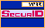

 Creating Your Own PIN
with SoftID
If you are going to create your own PIN,
first give some thought to what it will be. Do not pick an
obvious number like a birthday or phone number.
Note: You must run your SoftID in manual mode to create
a PIN. WebID authentication does not support the SoftID Login
Automation program.
To create your own PIN:
- Clear the PIN entries from your
SoftID by pressing the Clear button. The display
will clear and a new tokencode will appear.
- Initiate a login session. After you
respond to the usual prompt for your login, the system
will ask you to enter a PASSCODE.
- If you have never received
a PIN before, in the Enter PASSCODE
field type the code that is currently displaying
in your SecurID token.
- If your SoftID previously
had a PIN and the administrator did not clear it
when setting New PIN mode, enter the old PIN and
press Enter. In the Enter
PASSCODE field, type the code that
displays in the card.
- Click Send. If you have
entered the code incorrectly, the system will display an Access
denied page. If this happens, try authenticating
again.
- Once you have entered a valid
tokencode, you will see the New PIN screen.
- Enter a PIN that matches the
parameters set by the security administrator, and press
TAB.
- Enter your PIN again to confirm.
- Click Send. If your PIN is
acceptable, the system will notify you and you can log
on.
If any of the
following messages displays, check the PIN parameters for
your system and try to authenticate again:
PIN and confirmation do not
match.
PIN must be 4-8 digits.
New PIN rejected.
If you are still denied access,
contact your security administrator.
- Once your PIN is accepted, wait for
the next tokencode, and then follow the instructions in SecurID
Authentication.